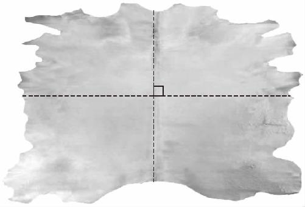
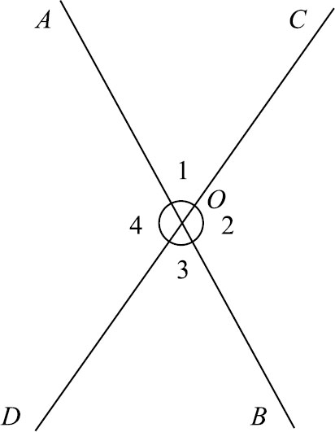

古埃及人开始用牛皮覆盖住地面的方式来平分土地，可是有一位智者发出了不同的声音：我们为什么非要用整张牛皮把地面盖住呢？要想让土地的面积相等，只需要长、宽分别相等就行了．我们完全可以把牛皮搓成牛皮绳，直接用4根牛皮绳围着土地的边缘转一圈，把4条边的长度都用绳子记录下来，不就可以了吗？大家一想：好像也对，于是很快就都学会了这种新办法，这样一来就省得折腾那么多张牛皮了，分地的效率也大大提高了！事实上也没有那么多块牛皮可以用，现在我可以告诉你，用整张牛皮蒙住地面的办法压根就没有发生过．这只是为了讲清楚欧几里得的5条公理虚构出来的故事而已．但是，我们刚才提到的用绳子分别测量边长的办法，可是一直在古埃及流行了好多好多年的．尽管这种办法是错误的！
它的问题在于：只用绳子量取了土地的四边长度，并不能保证土地的形状是完全一样的，如果这块土地不是长方形的，换句话说，如果长边、宽边不是完全垂直的，那么用这种办法得到的图形，它就不是完全相等的．我们在小学的时候学过，长方形的面积等于长乘宽，但是平行四边形的面积，可不等于长乘宽，而是等于长乘高．可是古代埃及人，他们并不懂得这个道理．同时我要说明的是，如果平行四边形只是倾斜了一点点，它的面积和长方形的面积差得并不多．比如，当平行四边形的一个角度是80度时，看上去倾斜度就很大了，但是它的面积和斜边为宽度的长方形差距却不到2％．这一点微弱的差别很容易被忽略，所以在相当长的时间内，古埃及人没有发现这种方式存在的问题．然而，历史在发展，人类在进步，随着测量精度的不断提高，他们就慢慢感觉出来了，虽然长宽一样，但是这个倾斜着的土地它好像就是不如长方形的地种出来的粮食多．于是，大家都不愿意要平行四边形的土地了，大家都希望能把土地分割得方方正正的．可问题是，要想把土地分割成长方形，我们就得保证土地的4个角都是直角．那么新的问题来了，我们用牛皮和绳子，怎么样才能做出完美的直角呢？
这时，又有一个人发明了一个好办法：首先他把一张牛皮上下对折一下，于是就会在牛皮上折出一条直线的折痕来，然后他再把这张牛皮左右对折一下，对折的时候把原来折的那条水平线对齐了，这样就又折出一条新的折痕来．（如图4－1）经常玩折纸的人，应该很容易理解我的意思，其实就是通过两条折痕，在白纸上折出一个十字来．现在就好办了，这个十字中的任何一个角都是直角了．这种操作本身很简单，大家很容易掌握，可是我要问：为什么通过这种办法得到的角就是直角呢？其中的关键在于，我们在折牛皮的时候，是把前面的那条折痕对齐了的，既然是对齐了，那就说明折出来的两个角是相等的，在此过程中我们利用的是几何学的第一公理：相互覆盖的两个东西相等．那么，这两个相等的角又分别是多少呢？由于这两个角的角度加起来是一个平角，所以它们的大小就是平角的一半，180度的一半是90度，所以它们当然就都是直角了．在这个过程当中，我们可以发现，任何一张牛皮、任何一张纸，只要是按照这种办法对齐了折两次，他们得到的角都是直角，角的度数也都是一样的．这就是欧几里得的第一个重要的公设：凡是直角都相等！ (1)

图4－1
不过古埃及人可不懂这么多，它们只知道靠着折叠牛皮的办法，就可以快速得到直角了，然后只要带有十字折痕的牛皮，往地上一扔，只要土地的长、宽两条边和十字对齐了，那就说明这个土地是方的．这块牛皮好不容易被细绳取代了，但因为要解决直角的问题，它又重新走回来了，看来分土地还是离不开牛皮的帮助．
古埃及人可以不管直角是什么，但是我们却不能不管，现在我们需要继续研究几何问题：直角的定义是什么？除了直角之外，还有哪些角？小学的时候我们就学过，角是射线围着它的端点转出来的结果．如果这条射线转了一整圈，那就是360度，叫作周角；如果只转了半圈，就形成了一条直线，这样的角度是周角的一半，因此就是180度，180度的角叫作平角．平角的一半就是90度，90度的角就叫直角．但是，我们之前说过，几何学是没有数字的数学，因此，我们不能通过90度来定义直角，那应该怎么表达呢？欧几里得的定义是：当两条直线相交时，如果相交所得的两个邻角相等，那么它们两个就都是直角．很明显，他是通过平角的一半定义直角的．同时他还指出：成直角的两条直线相互垂直，其中任意一条都叫作另一条的垂线．那么，如果这个角度小于直角呢？就叫作锐角．为什么叫锐角？因为这个角度看起来比较尖，比较锐利．反之，如果这个角度大于直角，就叫作钝角．这些知识都是我们小学的时候就掌握了的，现在新的问题来了，两条直线相交以后会产生4个角，这些角之间有什么关系呢？
如图4－2所示，AB 和CD 两条直线相交，产生了一个X形：其中上下的两个角∠1和∠3共用了同一个顶点，还共用了两条直线，这个状态看起来是针锋相对的，就像两个牛犄角对着顶在了一起，所以我们就把这对角叫作对顶角．同样，左右两边的∠2和∠4也是对顶角．只要是共用一个顶点，共用两条线的一对角都叫对顶角．那么，像∠1和∠2这样紧挨在一起的又是什么关系呢？由于∠1和∠2是一条直线被另一条直线裁成两半了，又因为它们两个彼此紧邻着，所以我们就把这样的一对角叫作邻补角．因为可以拼成一个平角，所以两个邻补角之和等于180度．

图4－2
这个邻补角等于180度很容易理解，那么对顶角∠1和∠3是什么关系呢？凭直觉我们都能想到，这两个角肯定是相等的关系．但是为什么两条直线相交以后，产生的对顶角就一定是相等的呢？